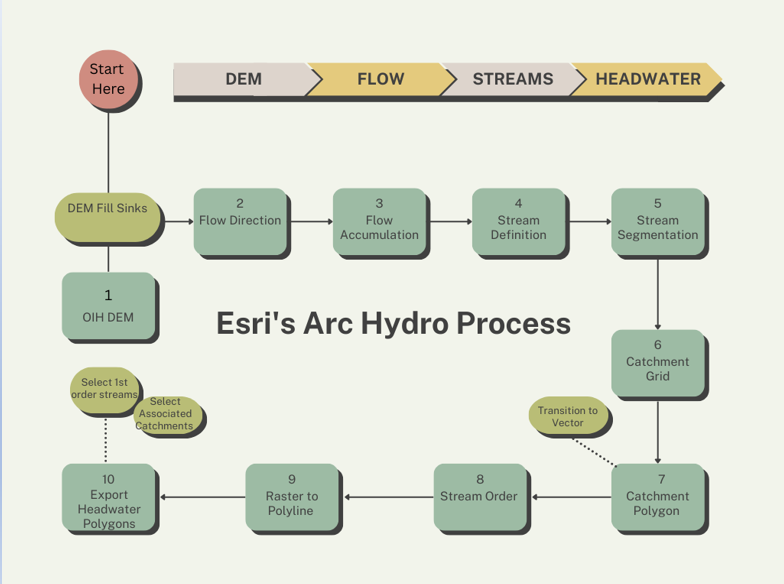

Jupiter GIS
We can MAP that for you!
Jupiter GIS is a consulting firm owned and administrated by a team of female GIS specialists. We take pride in providing sustainable and accessible GIS solutions and services for clients across a wide variety of fields and specialties. Our passion for nature drives us to partner with clients in conservancy and ecological protection, aiming not only to provide solutions but also to raise awareness and educate the public about the importance of conservation.
Khazana Ahmadli

Ashley Allan

Janet Pratt

The Land Conservancy for Kingston, Frontenac, Lennox, And Addington
The client for this project is the Land Conservancy for Kingston, Frontenac, Lennox & Addington. Their mission is to preserve and protect natural sites and landscapes in Kingston and Frontenac and Lennox and Addington counties.
Monarch
Danaus plexippus
Description: Large and bright orange, with black lines and white spots, this is one of our most easily recognized butterflies. Larvae feed exclusively on milkweed, and adults migrate to Mexico to overwinter.
Golden-winged Warbler
Vermivora chrysoptera
Description: A small songbird in the wood-warbler family, they are gray, with pale undersides, yellow wing patches and crown. Males have a black throat and mask, where females have pale gray.

Eastern Meadowlark
Sturnella magna
Description: A medium-sized, grassland bird. A brown and yellow bird with a bright yellow throat and belly, a black “V” on its breast and white flanks with black streaks, and with a strong beak and a relatively short tail.
Methodology
Data Pre-processing
Project: All acquired data were projected to the same NAD 1983 UTM Zone 18N projection as the Study Area. This preprocessing step was necessary to ensure the accuracy of the results during the analysis stage. Criteria that were dependent on the properties derived from the data – included (but were not limited to) distance, length, area, orientation, angle, and slope – required an appropriate projection to obtain accurate results.
Clip: All acquired data was clipped to the extent of the Conservancy’s AOI. This improved efficiency by creating a new geographic subset of features that were within the boundary of the Study Area – which avoided time-consuming or size-limiting issues due to unnecessarily substantial amounts of data during the analysis stage. The data was processed by utilizing the “Clip” tool for the vector data and the “Clip Raster” tool for the raster data.
Attribute Table Edits: The attribute tables for each of the Conservancy’s datasets were updated with added “Land_Type” fields and populated with their respective attributions to retain information that was useful to the Conservancy for later potential querying (“Canadian Shield” vs “Mixed Wood” land types), prior to the merging stage.
Merge: The OIH data was separated into Southwest and Southeast datasets that required merging the Southwest with their Southeast counterparts to create singular Enforced DEM, and Enhanced Flow Direction. This processing step was important for the efficiency and organization of the collective data for the analysis stage. The Conservancy’s data was separated into “Canadian Shield” and “Mixed Wood” datasets that were also merged.
Watershed / Headwater Analysis
The following flow chart graphic outlines the basic procedure that was followed to process the DEM to create the quaternary watershed (catchment) and headwater data layers. Please note that the term quaternary watershed has been used in association with size and naming of Ontario Provincial standards.
Development of Map Viewer
The development process for the viewer had different stages which includes Data Preparation, Web Map Development, Web Application Development and Layout/Design. Data Preparation typically included tasks such as deploying required layers TO web environment, implementing access restrictions to ensure privacy. In the web map development phase, defining scale dependencies, cartographic visualization, symbolizing layers, and configuring attribute querying through pop-ups were implemented. Finally, During the web app development phase, widgets were configured to enhance functionality, and layout and design elements were customized.
Cartographic Visualization
Cartographic choices have been carefully considered and applied using qualitative cartographic color conventions to enhance the clarity and legibility of the map. The selection of colors serves to represent different features and elements on the map.